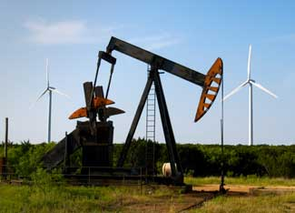

JIM DOMKE/ISTOCKPHOTO
Oil was the past, wind is the future. That's the thinking of famous oilman T. Boone Pickens, who is investing $10 billion to build the world's largest wind farm near Pampa, Texas.